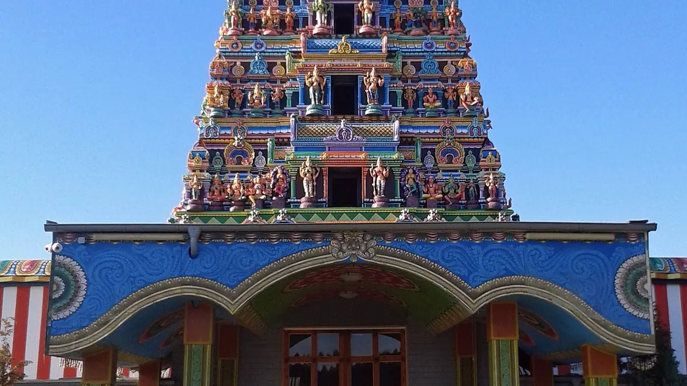
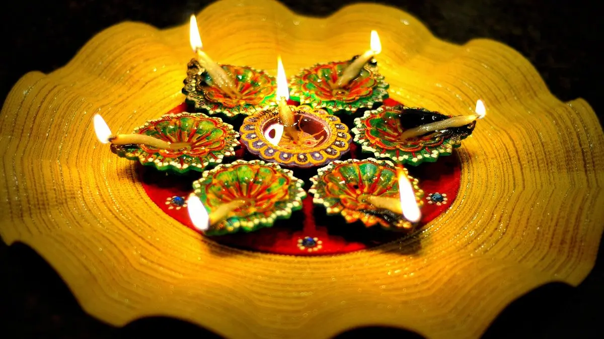
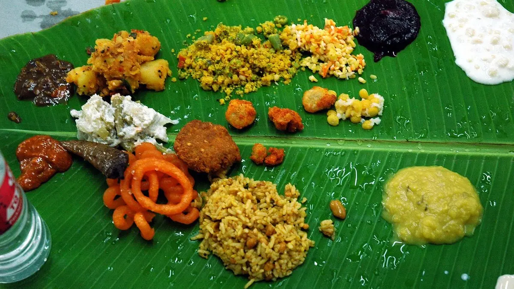
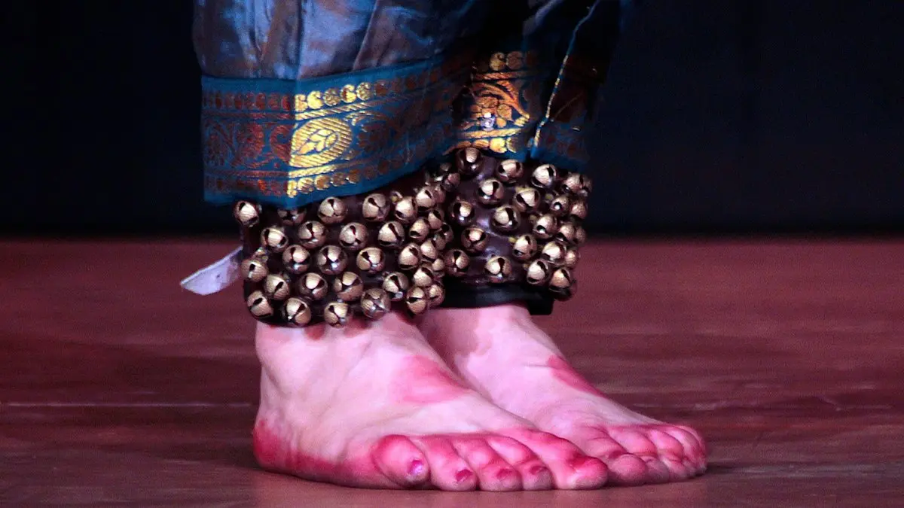

Community | 26.07.2026
Steinmeier beim Tempelfest in Hamm-Uentrop: Dank an die tamilische Minderheit
Foto: Rainer Halama / Wikimedia Commons, CC BY-SA 4.0
Arbeitsblatt für das Gespräch mit Luis, keine Entscheidung. Der Aufmacher mit den großen roten Punkten über dem Bild ist abgeschaltet; hier stehen vier Ersatzideen als laufende Proben und drei Vorschläge für eine Sonderfarbe im Hintergrund.
Titel, Daten und Bilder kommen vom Testsystem. Der kleine Punktbogen sitzt in jeder Probe unten rechts im Bild, so wie auf den anderen Bildkarten.
Das Foto steht sofort da, aber in Grau. Dann zündet der Punktbogen in der Ecke, und von dort läuft die Farbe einmal über das ganze Bild.
Probe in dieser Breite

Community | 26.07.2026
Foto: Rainer Halama / Wikimedia Commons, CC BY-SA 4.0
Handy, 390 px breit
Das Aufmacherfoto kommt in drei senkrechten Bahnen, die beim Scrollen verschieden hoch aufsteigen und sich zu einem Bild schließen. Der Titel steht schwarz auf Weiß darunter.
Probe in dieser Breite (bewegt sich beim Scrollen)
Foto: Bobinson / Wikimedia Commons, CC BY-SA 4.0
Kultur | 22.08.2026
Handy, 390 px breit
Ein Bildplatz, drei Geschichten. Wer eine der Zeilen antippt, zieht deren Bild wie einen Vorhang von unten über die Bühne; der Titel im Bild wechselt mit.
Probe in dieser Breite (Zeilen antippen)

Community | 07.11.2026


Fotos: peddhapati (CC BY 2.0), Jpatokal (CC BY-SA 4.0), Suyash Dwivedi (CC BY-SA 4.0), alle Wikimedia Commons
Handy, 390 px breit
Der Aufmacher steht auf einer Fläche in der Sonderfarbe. Das Foto ragt über deren Kante hinaus, der Titel steht groß auf der Farbe statt im Bild.
Probe in dieser Breite (bewegt sich beim Scrollen)
Kultur | 12.09.2026
Foto: Suyash Dwivedi / Wikimedia Commons, CC BY-SA 4.0
Handy, 390 px breit
Alle drei liegen auf der kühlen, grünen Seite, gegenüber von Rot im Farbkreis. Gelb, Gold, Creme, Sand, Rosa und Nachtblau sind aus den abgelehnten Runden gesperrt und fehlen deshalb. Kontraste nach WCAG 2.x gerechnet; für Fließtext gelten 4,5 : 1.
#D3EBE7, oklch(0.921 0.026 185). Helles, kühles Blaugrün; ersetzt an einzelnen Stellen das neutrale Grau.
| Textfarbe | Kontrast | Urteil |
|---|---|---|
| Schwarz #000000 | 16,8 : 1 | besteht |
| Titan #660000 | 10,7 : 1 | besteht |
| Impact #B30000 | 5,8 : 1 | besteht |
| Leise #555555 | 6,0 : 1 | besteht |
| Weiß #FFFFFF | 1,25 : 1 | nicht für Text |
#0C4A50, oklch(0.375 0.059 205). Tiefes Petrol; eine dunkle Bühne für genau einen Abschnitt, kein Seitengrund.
| Textfarbe | Kontrast | Urteil |
|---|---|---|
| Weiß #FFFFFF | 9,9 : 1 | besteht |
| Hell-leise #CCCCCC | 6,2 : 1 | besteht |
| Schwarz #000000 | 2,1 : 1 | fällt durch |
| Impact #B30000 | 1,4 : 1 | fällt durch, auch als Linie zu schwach |
| Titan #660000 | 1,35 : 1 | fällt durch; Titan und Pfau nie aneinander |
#DDEBCF, oklch(0.922 0.040 129). Helles Blattgrün, wärmer als Lagune; denkt an das Bananenblatt, ohne es abzubilden.
| Textfarbe | Kontrast | Urteil |
|---|---|---|
| Schwarz #000000 | 16,9 : 1 | besteht |
| Titan #660000 | 10,8 : 1 | besteht |
| Impact #B30000 | 5,8 : 1 | besteht |
| Leise #555555 | 6,0 : 1 | besteht |
| Weiß #FFFFFF | 1,25 : 1 | nicht für Text |
Stand 21.11.2026. Schrift Libre Franklin (OFL), Punktbogen aus dem Theme (ecke.svg). Die Fotos sind die Beitragsbilder des Testsystems mit den dort hinterlegten Nachweisen.